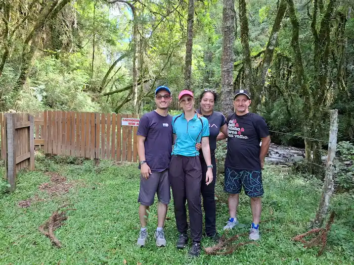

About Me
My name is Rian Cardoso Christani. I’m a 22-year-old software development student currently enrolled in the online program at BYU–Idaho. I live in Apucarana, Paraná, Brazil, and I am passionate about technology, accessibility, and creating solutions that make a real difference in people’s lives. I currently work as an Accessibility Analyst at Sage Inclusion, a company focused on making digital experiences inclusive and accessible for individuals with disabilities. In this role, I collaborate with teams to evaluate and improve web content and applications, ensuring they meet international accessibility standards like WCAG and follow best practices for usability and inclusion. This work has not only strengthened my technical skills but also shaped my understanding of how technology can empower everyone, regardless of ability. I’m deeply committed to learning and growing as a developer, and I believe in building software that is thoughtful, efficient, and inclusive. Outside of work and study, I enjoy exploring new tools and frameworks, working on personal projects, and continually challenging myself to become a better problem solver and team contributor.
Family has always been a central part of my life, and I’m grateful to be surrounded by people who continuously support and inspire me. In the picture shown, from left to right, you can see me, my wife, my mom, and my dad. The photo was taken during a memorable trip to Urubici, in the state of Santa Catarina, Brazil — a place known for its natural beauty and cold mountain climate. That trip was a meaningful moment of connection and rest, allowing us to explore breathtaking landscapes, enjoy peaceful time together, and make memories that I will always cherish. My family’s encouragement has played a vital role in my personal and professional journey, reminding me of the importance of balance, love, and perseverance.